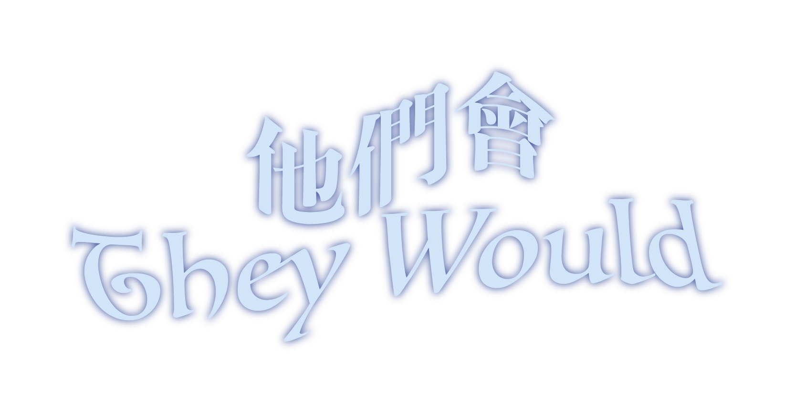

✦
- They would light their first cigarette.
- They would go out.
-
Their work would keep them busy for a few hours only, in the morning.
-
Their flat would rarely be tidy, but its very untidiness would be its
greatest charm.
-
Sometimes it would seem to them that a whole life could be led
harmoniously between these book-lined walls, amongst these objects so
perfectly domesticated that they would have ended up believing these
bright, soft, simple and beautiful things had only ever been made for
their sole use.
-
But they wouldn't feel enslaved by them: on some days, they would go
off
on a chance adventure.
- No plan seemed impossible to them.